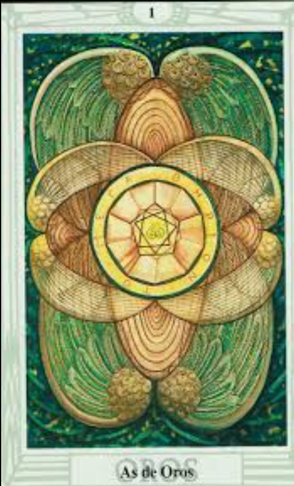

El Oráculo de Hékate te invita hoy a conectar con la abundancia y el inicio de un ciclo próspero. 🌿
El As de Oros simboliza nuevas oportunidades en el ámbito material y financiero. Es un recordatorio de que la prosperidad puede florecer cuando se cultiva con intención y perseverancia.
Hoy es un día para prestar atención a las nuevas oportunidades. Los comienzos positivos están a tu alcance si confías en tu potencial.
Este es el momento para enfocarte en tus metas económicas. Planifica y actúa con determinación, ya que las recompensas estarán en camino.
La prosperidad no solo se refleja en lo material. También es un día para reconocer las bendiciones en tu vida y dar gracias por ellas.
La estabilidad emocional se refleja en pequeños gestos. Hoy, el compromiso y la seguridad en tus relaciones serán esenciales.
Podrían surgir nuevas oportunidades laborales o proyectos. Mantente atento a propuestas que impulsen tu desarrollo profesional.
Es un buen momento para invertir o planear estrategias financieras a largo plazo. Aprovecha los recursos disponibles con sabiduría.
La salud integral se cultiva con hábitos positivos. Dedica tiempo a actividades que fomenten tu bienestar físico y mental.
"Recibo con gratitud las oportunidades que el universo me ofrece.
La prosperidad y el crecimiento forman parte de mi camino.
Hoy confío en el flujo de la abundancia."